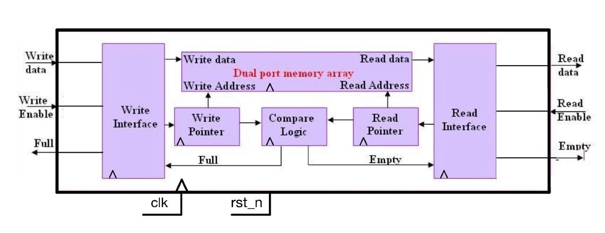

Log 3: The Synchronous FIFO
Moving from combinational gates to sequential buffering logic.
The Mission: Sequential Logic & Buffering
In Log 2, we built an adder where signals "rippled" through gates. Now, we move into Sequential Logic. We are building a Synchronous FIFO (First-In, First-Out). Think of this as the "waiting room" of digital design - a buffer used to manage data flow between different modules.
Module: Synchronous FIFO Buffer
What is a FIFO Buffer?
Before we look at the code, let's understand the concept. FIFO stands for First-In, First-Out.
Imagine a queue at a coffee shop: the first person to enter the line is the first person to be served and leave. In digital design, a FIFO works exactly like that. It is a memory structure used to store data temporarily when two parts of a chip are talking to each other but might not be ready at the exact same time.
Common uses for a FIFO include:
- Rate Matching: Connecting a fast data source to a slow data consumer.
- Data Buffering: Holding onto a burst of data so it doesn't get lost while the rest of the system is busy.
1. The Functional Specification
- Purpose: To provide a temporary storage buffer that maintains data order.
- Behavior:
- Writes data to memory on the rising edge of the clock when
wr_enis high. - Reads data from memory on the rising edge of the clock when
rd_enis high. - Provides status flags (full, empty) to prevent data overflow or underflow.
- Writes data to memory on the rising edge of the clock when
Interface Definition
| Signal Name | Direction | Width | Description |
|---|---|---|---|
| clk | Input | 1 | System clock |
| rst_n | Input | 1 | Active-low asynchronous reset |
| wr_en | Input | 1 | Write enable |
| rd_en | Input | 1 | Read enable |
| din | Input | DATA_WIDTH | Data input bus |
| dout | Output | DATA_WIDTH | Data output bus |
| full | Output | 1 | High when buffer is at capacity |
| empty | Output | 1 | High when buffer has no data |
Module Header
Based on the parameters and ports defined above, our module header is structured as follows:
View Module Header
module fifo #(
parameter DATA_WIDTH = 8,
parameter DEPTH = 16
) (
input logic clk,
input logic rst_n,
input logic wr_en,
input logic rd_en,
input logic [DATA_WIDTH-1:0] din,
output logic [DATA_WIDTH-1:0] dout,
output logic full,
output logic empty
);2. FIFO Architecture
To understand the FIFO, we must look at how the data path and control logic interact. The diagram below illustrates the four main internal components:
FIFO Buffer Block Diagaram
Component Breakdown:
- The Memory Array (Dual-Port RAM): The heart of the FIFO. It has one write port controlled by the
wr_ptrand one read port controlled by therd_ptr. This array stores the input data in chronological order. - Write Control Logic: This block manages the
wr_ptr. Every time a valid write occurs, it increments the pointer on the clock edge. If the pointer reaches the maximum depth, it wraps back to zero (circular buffer). - Read Control Logic: Similar to the write control, this manages the
rd_ptr. It ensures that thedoutreflects the data stored at the current read address. - Compare Logic: This unit manages the control of the FIFO. It compares the number of times data was written to the array and the number of times data was read to generate the
fullandemptysignals.
3. Internal Signals
To manage the FIFO's state and internal movement, we need to define several internal registers and signals:
- Memory Array: A 2D array of registers to store the data.
- Pointers (wr_ptr, rd_ptr): Sequential registers used to index the memory array for writes and reads - these point to the next Byte (row) written to or read from the memory array.
- Pointer Width Parameter: We define a local parameter
localparam PTR_WIDTH, (wherePTR_WIDTHis log_2(DEPTH)) this parameter will be used to define the number of bits of our pointers, and thecountsignal. - Counter (
count): This register will control thefullandemptyoutputs by tracking the number of items currently stored in the FIFO. Each valid writing increments the count, while each valid reading decrements it.- Empty State: When
countis 0, it indicates that no data is stored or all data was already read and therefore the FIFO is considered empty. - Full State: When
countequals the definedDEPTH, it indicates that every memory slot is occupied and the FIFO is full.
- Empty State: When
- Bit-Width Calculation: We define the width of the counter as
PTR_WIDTH + 1. Why the extra bit? While the pointers only need to address the array's slots (0 toDEPTH-1), the counter must be able to representDEPTH + 1distinct states (from 0 up to and including the value ofDEPTH). For example, in a 16-slot FIFO, a 4-bit pointer can count from 0 to 15 (0000 to 1111). However, we need a 5th bit to represent the number "16" to indicate the FIFO is full. Without this extra bit, the counter would wrap around to 0 when full, making it indistinguishable from the empty state. - Validation Signals (wr_valid, rd_valid): These combinational signals act as the final decision-makers for any operation.
- wr_valid (Write Authorization): This signal is high only when the external system requests a write (
wr_en) and the FIFO has available space (!full). It prevents "Overflow," where new data would overwrite unread data. - rd_valid (Read Authorization): This signal is high only when a read is requested (
rd_en) and the FIFO actually contains data (!empty). It prevents "Underflow," where the system would attempt to read "garbage" data from an empty buffer.
- wr_valid (Write Authorization): This signal is high only when the external system requests a write (
View Internal Signals
// Memory and Pointers
logic [DATA_WIDTH-1:0] mem [0:DEPTH-1];
localparam PTR_WIDTH = $clog2(DEPTH);
logic [PTR_WIDTH-1:0] wr_ptr, rd_ptr;
logic [PTR_WIDTH:0] count;
// Validation Logic (Combinational)
logic wr_valid = wr_en && !full;
logic rd_valid = rd_en && !empty;4. Deep Dive: How the FIFO Works (Step-by-Step)
To understand the logic, let's trace a FIFO with a WIDTH of 8 and DEPTH of 4.
Case A: The Empty State (all the data was read or upon reset)
- both
wr_ptrandrd_ptrare 0, andcountis 0. - Status:
emptyis 1,fullis 0. - Input: If you try to read (
rd_en=1), the internalrd_validlogic prevents the pointer from moving anddoutfrom changing because the FIFO is empty.
Case B: Writing Data (Filling Up)
- Write Data (8'hA):
wr_en=1. Data 8'hA is stored atmem[0].wr_ptrbecomes 1,countbecomes 1. - Write Data (8'hB, 8'hC, 8'hD): After three more writes,
wr_ptrhas wrapped around or reached the end.countis now 4 (4 = 3'b100 - shows why the extra bit is needed forcount). - Status:
emptyis 0,fullis 1. - Logic Check: At this point,
wr_validbecomes 0. Even if the external system keepswr_enhigh, the FIFO will ignore new data.
Case C: Reading Data (Emptying Out)
- Read Data:
rd_en=1. The FIFO outputsmem[0](8'hA).rd_ptrbecomes 1,countdrops to 3. - Status:
fullimmediately drops to 0, allowing new writes again.
Case D: Simultaneous Read & Write
If wr_en and rd_en are both high at the same time:
- Data is written to the current
wr_ptr. - Data is read from the current
rd_ptr. - Count stays the same: The number of items doesn't change, keeping the status flags stable.
5. Implementation
5.1 Control Logic
The control logic handles the sequential update of pointers and the counter. It ensures pointers wrap around correctly and that the count increments on writes and decrements on reads.
To manage the count register, we use a case statement that evaluates the current authorized operations (wr_valid and rd_valid) concatenated into a 2-bit signal. This allows us to handle four scenarios: a write only (increment), a read only (decrement), simultaneous read and write (no change), or no operation (no change). This approach cleanly separates the logic for different FIFO states within a single procedural block.
View Control Logic
always_ff @(posedge clk or negedge rst_n) begin
if (!rst_n) begin
wr_ptr <= 0;
rd_ptr <= 0;
count <= 0;
end else begin
if (wr_valid)
wr_ptr <= (wr_ptr == (PTR_WIDTH)'(DEPTH-1)) ? 0 : wr_ptr + 1'b1;
if (rd_valid)
rd_ptr <= (rd_ptr == (PTR_WIDTH)'(DEPTH-1)) ? 0 : rd_ptr + 1'b1;
case ({wr_valid, rd_valid})
2'b10: count <= count + 1'b1;
2'b01: count <= count - 1'b1;
default: count <= count;
endcase
end
endNote on Casting Syntax: In the code above, we use the syntax (PTR_WIDTH)'(DEPTH-1). This is a static cast in SystemVerilog. This specific syntax forces the value inside the parentheses on the right (DEPTH-1) to match the bit-width specified on the left (PTR_WIDTH).
Because parameters like DEPTH are typically 32-bit integers, comparing them directly to a smaller signal like wr_ptr can cause compiler warnings. Using this cast ensures the constant is correctly sized (truncated or padded) to the exact bit-length of the signal it is being compared against, leading to cleaner and more predictable hardware synthesis.
5.2 Status Flags
These signals are combinational. They look at the current count register and instantly change the FIFO outputs full and empty:
View Status Flags
assign full = (count == (PTR_WIDTH+1)'(DEPTH));
assign empty = (count == 0);5.3 Data Path
The data path handles the actual movement of data into and out of the memory array.
- If wr_valid is high, the data on the din bus is sampled and stored into the memory array at the address currently specified by wr_ptr.
- If rd_valid is high, the data currently stored at the rd_ptr address in the memory array is sampled and clocked into the dout output register, making it available to the external system.
View Data Path
// Write to memory
always_ff @(posedge clk) begin
if (wr_valid) mem[wr_ptr] <= din;
end
// Read from memory to output register
always_ff @(posedge clk or negedge rst_n) begin
if (!rst_n) dout <= 0;
else if (rd_valid) dout <= mem[rd_ptr];
end6. Full Source Code
View Full Code
`timescale 1ns/1ps
module fifo #(
parameter DATA_WIDTH = 8,
parameter DEPTH = 16
) (
input logic clk,
input logic rst_n,
input logic wr_en,
input logic rd_en,
input logic [DATA_WIDTH-1:0] din,
output logic [DATA_WIDTH-1:0] dout,
output logic full,
output logic empty
);
// Memory and Pointers
logic [DATA_WIDTH-1:0] mem [0:DEPTH-1];
localparam PTR_WIDTH = $clog2(DEPTH);
logic [PTR_WIDTH-1:0] wr_ptr, rd_ptr;
logic [PTR_WIDTH:0] count;
// Internal Validation Signals
wire wr_valid = wr_en && !full;
wire rd_valid = rd_en && !empty;
// CONTROL LOGIC
always_ff @(posedge clk or negedge rst_n) begin
if (!rst_n) begin
wr_ptr <= 0;
rd_ptr <= 0;
count <= 0;
end else begin
if (wr_valid)
wr_ptr <= (wr_ptr == (PTR_WIDTH)'(DEPTH-1)) ? 0 : wr_ptr + 1'b1;
if (rd_valid)
rd_ptr <= (rd_ptr == (PTR_WIDTH)'(DEPTH-1)) ? 0 : rd_ptr + 1'b1;
case ({wr_valid, rd_valid})
2'b10: count <= count + 1'b1;
2'b01: count <= count - 1'b1;
default: count <= count;
endcase
end
end
// STATUS FLAGS
assign full = (count == (PTR_WIDTH+1)'(DEPTH));
assign empty = (count == 0);
// DATA PATH
always_ff @(posedge clk) begin
if (wr_valid) mem[wr_ptr] <= din;
end
always_ff @(posedge clk or negedge rst_n) begin
if (!rst_n) begin
dout <= 0;
end else if (rd_valid) begin
dout <= mem[rd_ptr];
end
end
endmoduleDesign Summary:
In this section, we have successfully developed a fully functional RTL description of a Synchronous FIFO. We applied sequential logic to track internal state, utilized validation signals to prevent buffer overflows, and implemented a dual-port memory architecture. By separating the control logic (pointers and counter) from the data path (memory array), we have created a robust, parameterizable module.
With the hardware design finalized, we are now ready to move into the Design Verification phase to prove our implementation works correctly under real-world simulation conditions.